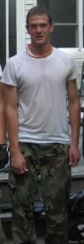

My name is Daniel Flint, I am a freshman majoring in Computer Science. My minors are in Web Development and Psychology. I live in upstate New York in a small town called Granville. I took an interest in web development on my own. My school was small and did not offer much of a background in webdesign other than perhaps a dreamweaver class. I learned a lot on my own using W3C schools and various other websites and really enjoyed it.
Some hobbies of mine are paintball, basketball, skiing, and various other sports. Computers also take up a considerable portion of my spare time as well. I learned a lot through trial and error. The internet was of a huge resource for me and I eventually became interested in web building and learning HTML and CSS. I ended up purchasing a year subscription to a webhost and domain and learned a lot through that as well.

Paintball is probably my favorite sport. I own a Tippmann 98 Custom and play a mixture of woodsball and speedball. I've played for somewhere around five years and have enjoyed it as much as possible due to the cost and short summers that we have. I have friends at home with large plots of land that allow us to build and play whenever we want. The picture on the right is from two summers ago playing in Rupert, VT.
Musical interests can go anywhere from Lady Gaga to Rammstein. I listen to just about anything and enjoy it. Frank Sinatra, Killswitch Engage, Justin Bieber, Eminem I don't care what it is. Country is perhaps the one genre that I don't really appreciate much. I really enjoy going to rock and metal concerts. Some bands I have seen include: Lamb of God, Mudvayne, Soilwork, Disturbed, Avenged Sevenfold, Bullet for my Valentine, 30 Seconds to Mars, Korn, Killswitch Engage, the list goes on, but concerts are something I really enjoy.
I have one older brother that goes to Siena College. He is a junior majoring in finance and currently works with Collegiate Entrepreneurs. He currently lives in an Albany apartment and will finish his degree in 2012. I will be working for him and the rest of the company this summer.